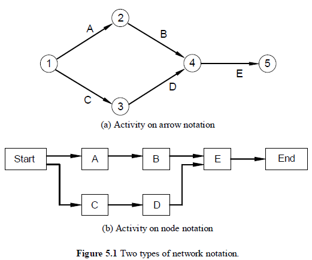
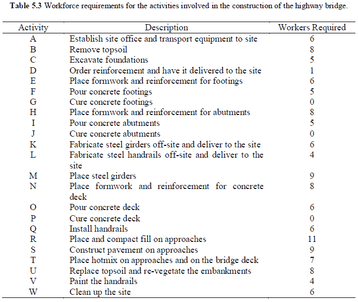
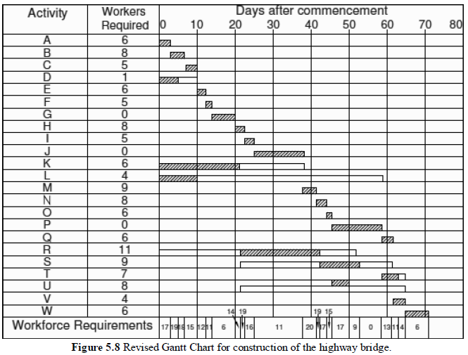

When a large engineering project is undertaken, there are many activities that have to be coordinated, and careful planning is needed if the project is to be completed on time and within budget. Scheduling techniques to assist in the planning of large projects, including the critical path method (CPM) and the Gantt Chart. The use of these techniques assists in identifying and scheduling activities so that the project can be completed in the minimum feasible time. The rescheduling of activities take into account the limitations on certain critical resources.
See Quizzes on Black Board.
Project scheduling deals with the timing and sequencing of the many activities that comprise a large project. It requires a comprehensive understanding of the project and informs other project management and control processes. Project scheduling will be used at different times within a project and will become more specific as the project progresses. For example, a schedule developed after the detailed design will be more comprehensive than the schedule developed during the preliminary design of the same project. Scheduling entails identification of the activities required within the project, estimation of the duration of each activity, identification of the precedence relations between activities (i.e. which ones need to precede others) and development of an organisational network or schedule that represents this information accurately. Such an organisational network can be used to provide the following information:
CPM uses a network of arrows and nodes to represent all activities in a project. Two different types of notation are commonly used. These are called activity on node (AON) and activity on arrow (AOA). Either notation can be used to represent the precedence relationships between activities.
In the AOA notation in the above figure, the arrows represent the activities and the nodes are used to represent the precedence of activities. The nodes are arbitrarily numbered, so that each activity has a unique designation in terms of its start and end nodes. For example, Activity A is designated 1-2, Activity B is designated 2-4 and so on.
For the AON notation, a box represents an activity. There is also a box for the start and finish of the project. Arrows then represent the precedence relationship between activities. From the information provided above, Activities A and C do not need any activities to be completed before they can start. Therefore, they can both commence at the beginning of the project as shown in the above figure. Activity A must be completed before Activity B can commence, so an arrow goes from A to B.
AOA notation is more commonly used in practice. There are four basic rules to observe when constructing AOA organisational networks. These are:
The CPM process for project planning involves the following steps:
The activities can be presented as a sequential list or a hierarchical list. A hierarchical list is referred to as a Work Breakdown Structure (WBS) and is used to group similar tasks or activities undertaken by the same contractor.
The durations estimated are based on the assumption that adequate equipment and human resources are available to complete the activities without delays. Many simplifying assumptions are made.
Determine which activities depend on the completion of which activities.
The construction of the network is a relatively straightforward task once steps 1-3 have been completed. However, steps 1-4 can involve several iterations as the process of drawing the network can facilitate thoughts about the activities involved and their inter-relationships and dependencies.
The earliest start time (EST) for an activity is the earliest time that it can commence assuming all preceding activities and the overall project starts on time. The latest finish time (LFT) for an activity is the latest time that it can finish without increasing the minimum completion time for the overall project. Typically, the EST and LFT would be documented for each node.
The ESTs are calculated in the following way: Begin at the first node (i.e., the node that has no arrows leading into it). In this case this is Node 1. Set the EST at this node to be 0. For each subsequent node the EST is determined by examining all activities leading into the node. For each activity determine the sum of the EST of its start node plus its duration. Take the largest of these values to give the EST at the new node.
The critical path is the set of all activities that cannot be delayed without delaying the entire project. There is always at least one critical path from the first node to the last node. There may be more than one critical path in some cases. The minimum time to complete the project is given by the length of the critical path. This is also given by the EST and LFT at the last node.
The latest start time (LST) for an activity is the latest time that it can start without increasing the minimum completion time for the overall project. The earliest finish time (EFT) for an activity is the earliest time it can finish if it and all preceding activities start at their earliest start times.
The total float (TF) for an activity is the amount of time that the activity can be delayed from its EST without affecting the time to complete the overall project. The total float must be zero for all activities on the critical path. For other activities, it may be determined by computing the difference between the LST and EST. Alternatively, the TF may be determined by computing the difference between the LFT and the EFT for each activity.
The free float (FF) for an activity is the amount of time that the activity can be delayed from its EST without affecting the starting times of subsequent activities. Once again, the FF is zero for all activities on the critical path. For noncritical activities, the FF is determined by subtracting its EST and its duration from the EST of its ending node.
The interfering float (IF) for an activity is simply the difference between its TF and FF. The use of interfering float could delay subsequent activities, although it will not affect the time to complete the overall project.
A Gantt Chart is an organisational network that represents the timing of activities that make up a project. In a Gantt Chart all activities are listed down the page with each activity having a horizontal bar representing the planned timing of its completion.
The figure below is a Gantt Chart for the construction of a highway bridge. The shaded bars in Figure 5.7 represent the activities occurring over time (based on their EST), while open bars represent total floats for the corresponding activities. Each activity that has float can be rescheduled within the times represented by the open bar without delaying the overall project (assuming that all other activities run to schedule).

One advantage of a Gantt Chart compared to a critical path network is that the former shows which activities should be running at a particular time (by noting which shaded bars are intersected by a vertical line through the corresponding time). On the other hand it is not usually possible to draw the Gantt Chart without first analysing the relationships between activities using a critical path network in order to determine the EST, LFT and floats for all activities. Furthermore, it is not easy to depict the precedence relationship between activities in a Gantt Chart for complex projects. Although, in theory, vertical lines can be drawn from the end of preceding activities to subsequent activities, this can become very messy and hard to follow for real projects. Nonetheless, Gantt Charts are commonly used to track the progress of projects (often in combination with critical path networks).
In drawing the organisational networks to date it has been assumed that the only factor that constrains the start and finish of activities is the precedence relationships, i.e., certain activities must be completed before a particular activity can commence. In practice, the availability of critical resources can constrain the timing of activities. These critical resources may be human resources such as the total workforce, skilled labour in particular areas (e.g. steel riggers or electricians) or critical items of equipment (e.g. cranes, bulldozers, graders). Project managers must schedule activities taking these critical resources into account, and, in appropriate cases acquire additional resources by purchase, lease, rent or redeployment from other projects.
A Gantt Chart can be used to indicate the allocation of critical resources on a project (or set of projects). A Gantt Chart together with a critical path network can be used to reschedule activities so that a project can be completed within the resource constraints.
The table below shows the estimated workforce requirements for the activities that make up the highway bridge project. Note that Activities G, J and P involve allowing the concrete to cure and do not require significant worker involvement.
The information given in the above table has been summarised in the bottom row of the Gantt Chart in Figure 5.7 above to show the workforce requirements on each day of the project assuming that all activities start at their EST. From the bottom row in Figure 5.7 it can be seen that the workforce for the project (based on EST) starts at 28 workers and builds up to a peak of 30 workers but drops to 9 workers by day 26 and, in fact is 0 workers for some periods of the project. This is unlikely to be optimal. The company carrying out the construction would want to move its workers between projects so that all are fully employed and that no project runs overtime. A common approach is to attempt to “level” or smooth the resources required for any particular project. A trial-and-error process can be used by moving non-critical activities within their allowable times so as to smooth the workforce requirements as much as possible.
In the above example, the peak workforce was limited to 20 workers. The question arises as to what is the minimum peak workforce requirement that does not result in the project being delayed. This can be determined using the above procedure and progressively reducing the limit on the workforce until the time to complete the overall project is increased. Careful examination of Figure 5.8 indicates that a workforce of 20 workers is required from the start of day 39 until the end of day 41. This cannot be reduced without delaying the overall project, so 20 is the minimum workforce to complete the project in minimum time. Of course, if the available workforce is less than this (say 17 workers), the above procedure can be used to schedule activities so that the project finishes in the minimum possible time (which in this case will be more than 71 days). Then a decision will need to be made as to whether it is better to accept this delay in the completion of the project or to hire additional workers.